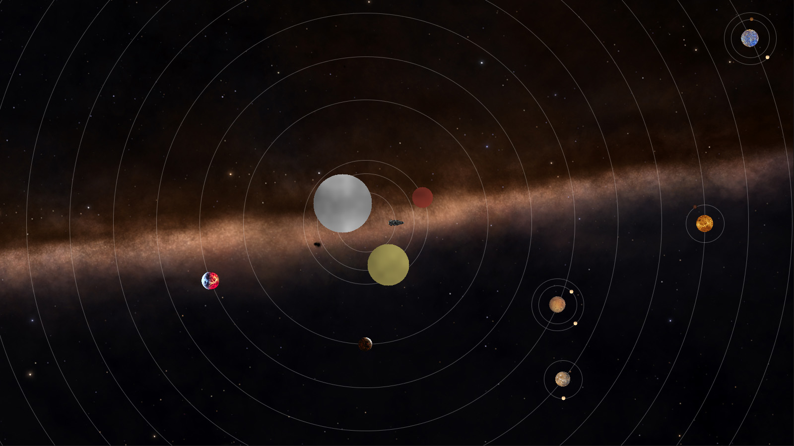

//
Random Solar Systems
My Interactive Media Development class spent a few weeks studying random numbers and different algorithms to create them. This program takes real-world star rarity and system
data and uses it to create dynamic solar systems. Potentially millions of unique systems can be created. It makes use of 3 key algorithms: directed random, Gaussian distribution,
and Perlin noise. Systems can have multiple stars and a variable number of planets with a random number of moons each. Moons orbit planets that orbit the center of mass of the system.
Multiple stars can generate in the same system, and their barycentric coordinates are calculated dynamically based on mass ratios. You can download an executeable here.
Alternatively, here is a short image gallery:

//
Features
Animated Perlin Noise
Stars are generated on the fly, and so are their textures! The pulsing plasma is made up of colored 3D perlin noise (using the z axis to vary with time).
Real-World Data
I based the star generation off of real-world stellar data. Masses, rarity, and solar radii are all relatively accurate based on the star class.
User Interaction
A dynamic view system makes panning and zooming easy! I built a view system from the ground up to let the user see whichever parts of the system they wanted to.
A Spaceship That Explores
What good is a system if there is no-one to explore it? By default, the view is locked on to a spaceship that moves randomly and uses Perlin noise to create realistic thrust and RCS exhaust.
Copyright © 2016 Daniel Timko